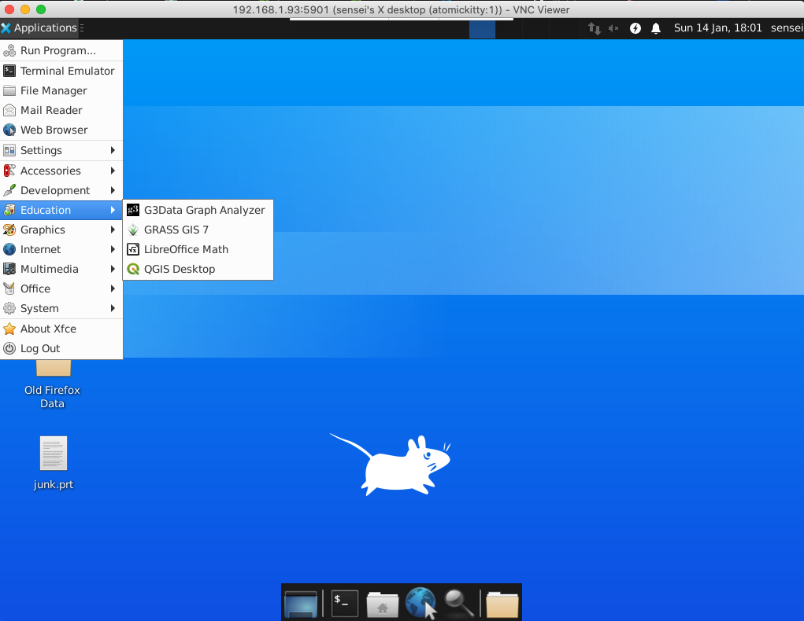
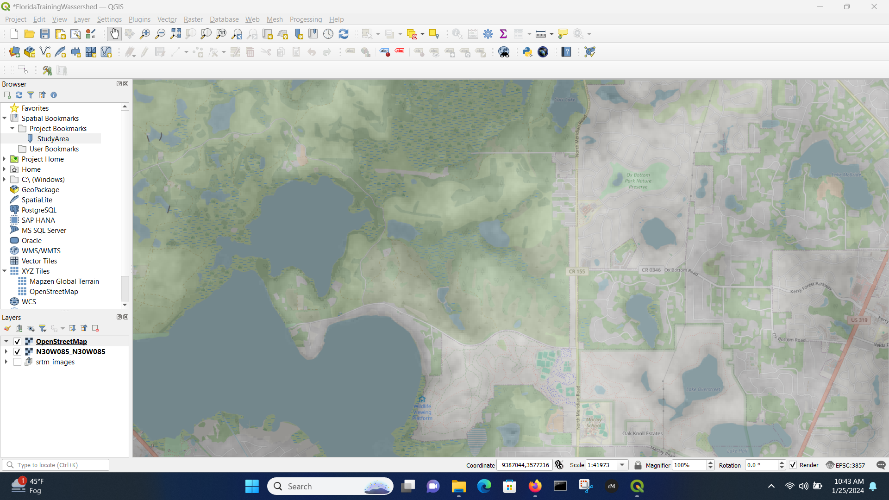
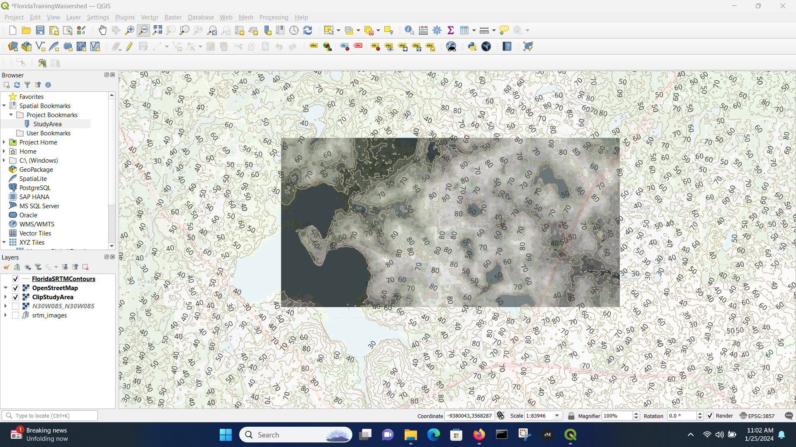
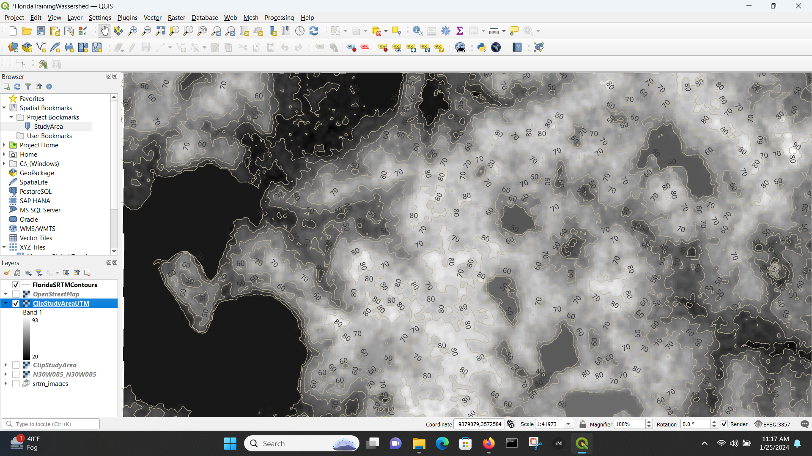
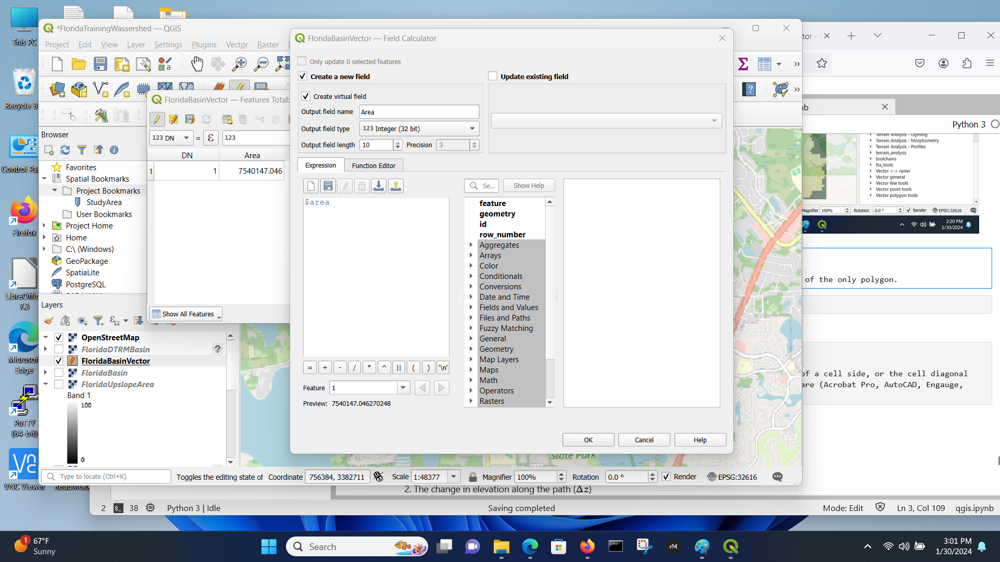

QGIS Topography¶
Course Website
Introduction to QGIS for water systems related mapping and analysis.
Readings¶
Baraka, M. 2024, Watershed Delineation in QGIS: A Summary Guide
Brutsaert, W., 2005, Hydrology: An Introduction. Cambridge University Press
Chow, V.T., Maidment, D.R., Mays, L.W., 1988, Applied Hydrology. New York, McGraw-Hill.
Florida Delineation Training Watershed (png) Right-Click “Save As…”
Texas Delineation Training Watershed (png) Right-Click “Save As…”
{kind=link}
{kind=link}
Videos¶
Outline¶
What is QGIS?
Why use QGIS instead of ESRI products?
Installing QGIS on your ‘puter
Making a Topographic Map
Watershed Analysis
Watershed Metrics
What is QGIS?¶
QGIS, or Quantum GIS, is an open-source geographic information system (GIS) software that allows users to view, edit, and analyze geospatial data. Here’s an overview of its history, recent state, and common uses:
QGIS was first released in 2002 by Gary Sherman as an open-source alternative to proprietary GIS software. Over the years, it has evolved through contributions from a global community of developers, becoming a powerful and user-friendly GIS tool.
As of January 2022, QGIS was still being actively developed, with regular updates and releases. The software has a large user community that contributes to its improvement and the development of plugins to extend its functionality. Features are continually added and enhanced, making it a competitive option in the GIS software landscape.
Typical Uses:¶
Data Visualization: QGIS allows users to create maps and visualize geospatial data in various formats, such as shapefiles, GeoJSON, and more.
Data Editing: Users can edit and digitize spatial data directly within the software, making it useful for tasks like updating maps or correcting geographical information.
Spatial Analysis: QGIS provides a wide range of tools for spatial analysis, including proximity analysis, overlay analysis, and statistical analysis, aiding in decision-making processes.
Map Design: The software includes tools for designing aesthetically pleasing maps with customizable symbology, labels, and layouts.
Integration: QGIS supports the integration of various data sources, including GPS data, remote sensing data, and data from online services.
Plugins and Extensions: The availability of plugins and extensions allows users to customize and extend the functionality of QGIS based on their specific needs.
Open Source: Being open source, QGIS is free to use, and its source code is accessible to developers, encouraging collaboration and continuous improvement.
Learn more at the official QGIS website.
Note
Here are useful QGIC GitHub links:
Download(s) Your best bet is probably to work through the official QGIS website.
Why QGIS instead of ESRI products?¶
You may have already used the University-ble$$ed ESRI GIS products in GIST 3300/5300 Geographic Information Systems, or other GIS-based courses at TTU, and wonder why I choose QGIS. The two main reasons are:
QGIS is Open Source (I am a cheap).
It will run in some form without much fuss on a PC, MAC (both intel, and Apple silicon), and in Linux (on intel/amd and arm silicon).
If you already have ESRI-based GIS tools use them, no good reason to install a second GIS.
Note
Several other factors may influence someone to choose QGIS over other similar GIS (Geographic Information System) tools. Here are some reasons why individuals and organizations might prefer QGIS:
Open Source and Free: QGIS is open-source software, meaning it is free to use and distribute. This can be a significant advantage for users or organizations with budget constraints, as it provides powerful GIS capabilities without the need for a substantial financial investment.
Active Community Support: QGIS has a vibrant and active user community. This community contributes to the development of the software, creates plugins, and provides support through forums and documentation. The availability of community support can be valuable for users seeking assistance or looking to extend QGIS’s functionality.
Cross-Platform Compatibility: QGIS is designed to run on multiple operating systems, including Windows, macOS, and Linux. This cross-platform compatibility makes it accessible to users with different operating system preferences.
User-Friendly Interface: QGIS is known for its user-friendly interface, making it accessible to both beginners and experienced GIS professionals. The software employs an intuitive layout and design, facilitating ease of use for those new to GIS.
Extensive Functionality: QGIS offers a broad range of tools and features for data visualization, editing, and analysis. Its functionality is comparable to many proprietary GIS tools, and it continues to evolve with regular updates and new releases.
Plugin System: QGIS has a robust plugin system that allows users to enhance and extend the software’s capabilities. Users can install plugins to add specific functionalities tailored to their needs, making QGIS adaptable to a wide range of applications.
Interoperability: QGIS supports various data formats and standards, ensuring compatibility with data from different sources. This interoperability makes it easier to integrate QGIS into existing workflows and work with diverse geospatial datasets.
Customization: Users can customize QGIS to suit their specific requirements. This includes customizing symbology, creating tailored layouts, and utilizing plugins to add specialized tools, making QGIS adaptable to a variety of use cases.
Ultimately, the choice between GIS tools depends on the specific needs, preferences, and constraints of the user or organization. QGIS’s open-source nature, community support, and extensive functionality make it a compelling choice for many GIS users.
Installating on your computer¶
Windows and Mac, choose the appropriate installer and do what the picture menus show you.
Windows¶

Macintosh¶

For this course we will assume either a Windows or Mac install, some Linux notes are below but beyond scope. Naturally we cannot use on-campus machines to demonstrate, hence my laptop!
Linux¶
Identify your distribution. Select correct package source. Use your package manager (RPM, YUM, APT, …) to install from a suitable repository.
Note
Linux is more complicated, especially if trying to install on a non-amd chipset.
Here is how I installed onto a Raspberry Pi. First get the correct instructions: Then modify the gis.sources file as needed:
Then modify the gis.sources file as needed: 
Verify the Install This is a tricky part; just opening the software is a good start. Here is the process on my computer:
Find the software (my install defaulted it to “Education” which is not a bad choice.) 
Launch and wait for initial interface screen
Work through tutorials
Now to see if the install is complete enough work through the On-Line training manual. If you can get to Module 6 without much fuss; you probably have a working installation. On my machine, a representative map from the example data (served by qgis website) is: 
Getting Data¶
This is a bit tricky if this is first time (like me); there are lots of data available.
We mostly will want:
Base maps (Open Street Maps is a good starting point)
Elevation models (DEMs) (Several sources. NASA, USGS, TNRIS, similar sources - it takes some online reading to figure out how to access)
USGS Earth explorer …. https://earthexplorer.usgs.gov/
Open Topography….https://portal.opentopography.org/raster?opentopoID=OTSRTM.082015.4326.1
Google earth engine ……. https://earthengine.google.com/platform
From Drone imagery — AgiSoft Processing.
You can also generate yours with kml /kmz data collected from Google Earth Pro.
Level Sets (Contours) - you can make from elevation maps, in some locales they are already done - but are vector features so other than picture making not super useful
Point Clouds - These come from LIDAR scans and similar sources. Main trick is to figure out units (usually in MetaData) and figure out coordinates.
There are a lot of other things available, but baby steps for now.
Making a Topographic Map¶
Here we will do step-by-step example of a CE 3354 training watershed; in that class we were interested in the watershed boundary, here we just want a topographic map generated from the GIS (yes I am aware the map used below is already a topographic map - but bear with the example).
The steps to do a complete watershed delineation are outlined in Baraka, M. 2024, Watershed Delineation in QGIS: A Summary Guide
The SAGANG package was manually installed using guidance from How to manual install SAGA 9.1 (YouTube) . Other plug-ins are installed using the Plug-in manager menu.
First start with the Florida Topographic Map

Then we need to locate the area - it turns out that the Moore Pond feature is near Tallahassee Fl. (Used Google to find that out!)

Then zoom out

The bridge we are interested is on the Miller’s Landing feature - with that in mind, we can start QGIS, load OSM tiles, and look for the study area.
We will shift the window to the right a bit and scale about the same as the original Topographic map clip. Once we have desired area, then save a bookmark to easily return to the view area.
Get DEM¶
Now we will get a DEM coverage - we will use the SRTM from NASA (30 meter poixels) but one might need better resolution as project proceedes.
Using the Canvass area, download SRTM tile:

Next we can play with transparency so can background the street maps.

Contours¶
We can make a elevation contour of the study area. This is sometomes optional, but it is the whole point in Water Systems. Topography dictates hydraulics in most cases.
Menu/Raster/Extraction/Contour
The result (using 3.048 meter intervals \(\approx\) 10 feet) is :

It is probably more useful for fewer lines, so could repeat at 10 meter (32.8 foot) intervals, or play with the symbology to render fewer lines.
Note
The process to make a topographic map from just XYZ coordinates is covered in another lesson and uses the tools you learned in ENGR 1330. The remainder of this document continue the analysis to obtain a watershed boundary for the study area above - it will be instructive later on when we get to drainage systems
Extract (Clip) DEM - Warp to a UTM Coordinate System¶
Here we will clip the viewing area, and then just process the clipped area - this will speed up our work a lot.
Menu/Raster/Extraction/Clip Raster by Extent
Here is the clipped area (zoomed out to verify)

Warp (reproject) the Clipped Area to UTM Zone¶
UTM gives a nearly cartesian system, which is useful for other analyses, so lets do that now.
First need to know the UTM panel. Use Google

Now we know the zone, so use
Menu/Raster/Projections/Warp (Reproject)
Mostly used defaults, except chose Zone 16N (it was only CRS available in the software), and used cubic interpolation to smooth out the elevations a bit - we are after a watershed boundary, so the smoothing should help with goofy curvature.

Sink Fill¶
This step is to fill in low spots, so there is always a path to lowest point (I sort of disagree with this step, but it is accepted GIS analysis step). Here some trial-and-error is needed using the System for Automated Geoscientific Analyses (SAGA) tools. The current SAGA version is 9.X while the only version I can access is 7.3 and there is no guidance on how to upgrade. Based on internet search, most QGIS non-genius users are coimplaining that the SAGA project is failing to support the upgrades, and other techniques are offered. If you are in Linux, you build from source anyway, so its not a problem.
I found that SAGA NextGen/Terrain Analysis/Hydrology/Sink Fill (Wang & Liu) indeed ran and produced non-empty output.

Channel Identification¶
If needed (sometimes can skip to next step):
SAGA terrain analysis package (to extract straler order)
Visualize Straler Order
Filter small streams using raster calculator
Adjust Strahler order
Channels and Drainage Basins¶
SAGA/TerrainAnalysis-Channels/Channel Network and Drainage BasinsInput Filled DEM and choose threshold based on Straler order (I did trial and error without saving files until I had a workable looking catchment then proceede to next step/
Adjust symbology as necessary to interpret the results (repeat as needed unless it fails then no point)
Determine Catchment¶
Use coordinate capture plug-in to find coordinates of pour point.
Use Upslope Area in SAGA with the coordinates.
Polygonize the Watershed¶
Raster/Polygonize(Raster to Vector)
Choose delineated raster as the input. Specify the output vector as shapefile (SHP)
Completed Delineation¶
Here we render the delineation - the vector polygon, which has use later on (and is the whole point of synthetic hydrograph generation).

Compare to Manual Delineation

Export the DEM (Masked by Polygon)¶
Later in the class we will explore and will need the DEM of the watershed only!
The export is done using Raster/Extraction/Clip by Mask Layer and results in a final product for later use.
Here is the clip command (note the file type is .xyz to produce an ASCII grid)

Here is the result after prettification.

Determine Watershed Area¶
If we have the vector outline then use the attribute table and compute the polygon area of the only polygon.

# compute area in acres
7540147.046*(3.28)*(3.28)*(1/43560)
1862.2570702407345
Compare to by-hand¶

# count squares
howmany = 270
# size
howbig = howmany*525*525/43560
print(howbig)
1708.4194214876034
Measuring Length(s)¶
Similar to area, you can count cells along a path and multiply the count by the length of a cell side, or the cell diagonal (depends on how many diagonal moves you need to make) to obtain a length. Or use software (Acrobat Pro, AutoCAD, Engauge, ArcGIS, QGIS, …. ) to make the measurements.
This can be done directly in GIS using the measuring tool; depending on accuracy needs may do in pieces.
Estimating Slope(s)¶
Slope estimates require two components
A path with a length (\(S\))
The change in elevation along the path (\(\Delta z\))
The dimensionless slope is simply the ratio of the two \(\frac{\Delta z}{S}\). Percent slope is the dimensionless slope multiplied by 100. Sometimes slope is expressed in units of \(\frac{ft}{mi}\) or \(\frac{m}{km}\), while meaningful these will have to be converted into dimensionless or %-slope for most hydrologic computations.
Estimating Soil Properties¶
Subjective when using paper maps, but reasonable values can be inferred from soil maps - either paper-based or electronic Web Soil Survey
Estimating %-Impervious¶
This is subjective, but one reasonable approach is using Google Earth
Find the area of interest
Select a viewing height (needs to be same for all areas if you are going to have to scroll)
Put a grid on the screen (physical grid on see‐thru plastic, or use a china marker and draw on the screen)
Count concrete vs not concrete – relative ratio is a useable estimate of the % impervious
Note
This would be a good task to hand off to a machine learner model. Take the area of interest, capture an image, have the ML model count pixels that are NOT CONCRETE (brown, green, …..)
Self-Study Tasks:¶
Explain the significance of a delineated watershed in the context of a study area.
Discuss how watershed boundaries could impact water systems design, processes, and management.